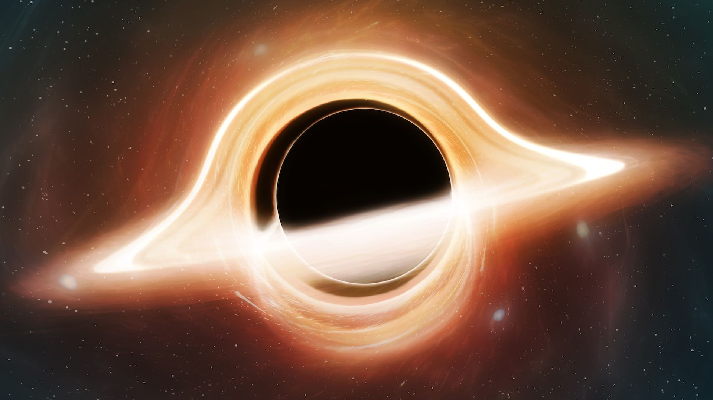
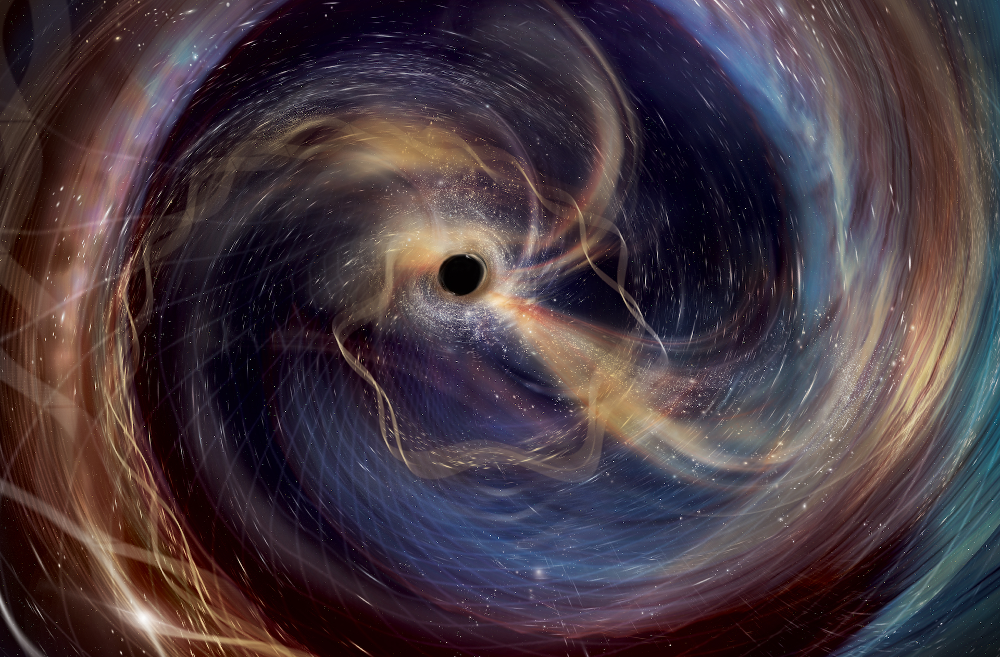
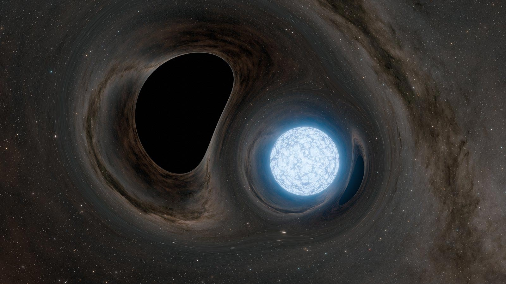
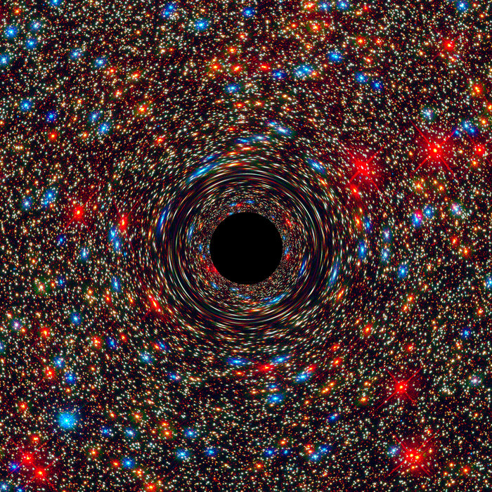
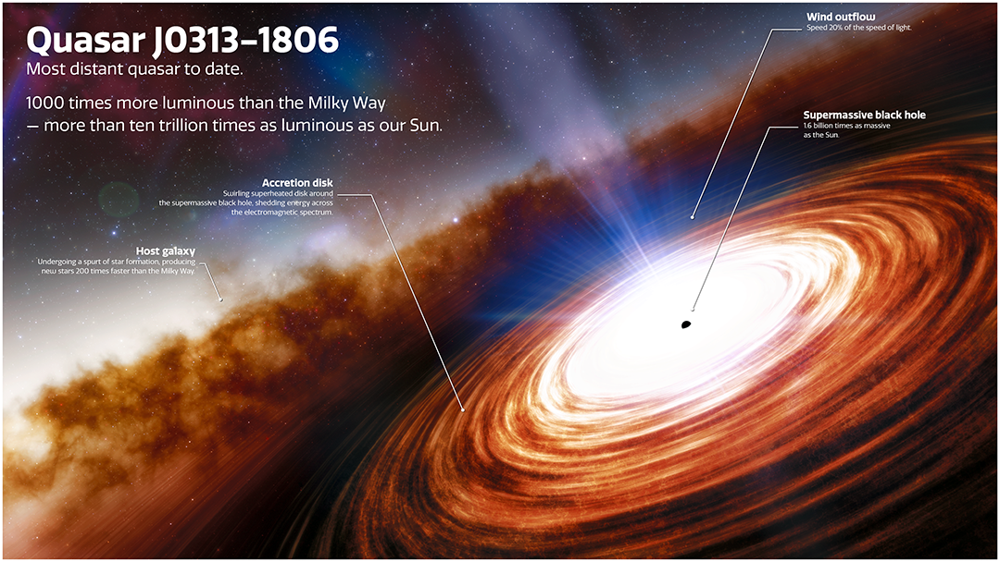
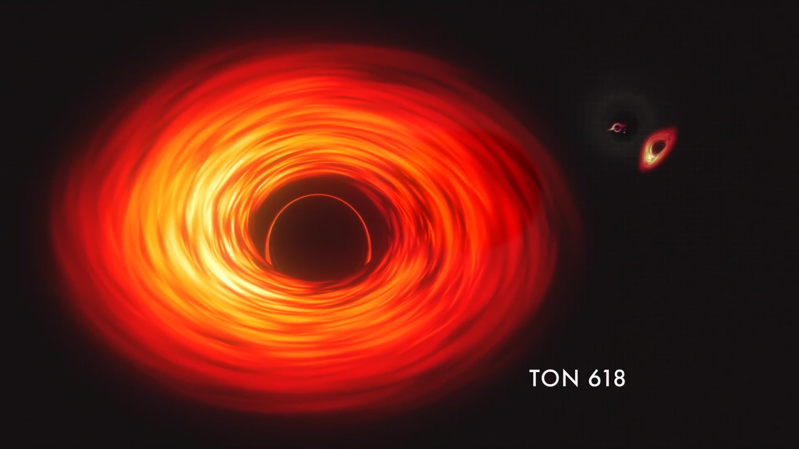
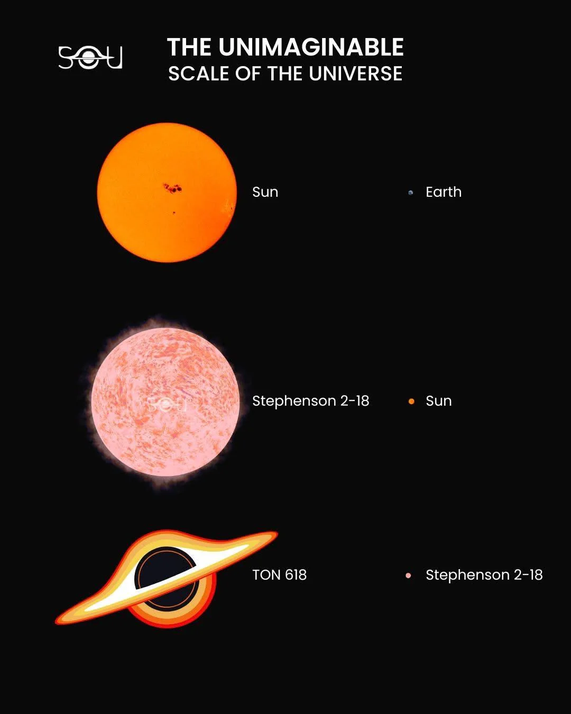

BLACK HOLES

A black hole is not a cosmic vacuum cleaner—it’s a region of spacetime where gravity is so strong that, past a certain boundary, even light can’t escape. In other words: black holes are so massive and compact that they dramatically curve spacetime, which leads to extreme effects like strong time dilation and light bending near them. Black holes are predicted by Einstein’s general relativity and are now observed indirectly through their effects on nearby matter, stars, and light.

What is a black hole?
A black hole is defined by an event horizon: a one-way boundary. If you cross it, there is no path back out—not because something is “pulling harder than light speed”, but because all future-directed paths (even for light) lead deeper inward.
Event horizon, singularity, and “what’s inside”
Event horizon: the surface where escape becomes impossible. From far away, it looks like a sphere around the black hole.
Singularity (classical GR): a place where curvature becomes infinite in the equations. Most physicists treat this as a sign that the classical theory is incomplete and that quantum gravity must take over at extremely small scales.
What’s beyond the horizon? We can’t receive information from inside, so we cannot directly observe it. General relativity gives a mathematical description of the interior, but what truly happens at the very center is still an open problem in fundamental physics.
Where do black holes appear, and what do they do?
Black holes show up in many environments: in binary star systems, in dense star clusters, and at the centers of galaxies. They influence their surroundings mainly through gravity:
- They bend light (gravitational lensing) and can distort the appearance of background objects.
- They heat up infalling gas: an accretion disk can glow brightly in X-rays and UV.
- They launch jets in some systems, sending high-energy particles far into interstellar and intergalactic space.
- They merge and produce gravitational waves—ripples in spacetime that we can now detect.

How black holes form (types)
Stellar-mass black holes can form when a very massive star runs out of fuel and its core collapses. Often this happens in a core-collapse supernova (a “massive star explosion”), but in some cases the collapse can be so direct that the star produces a weak or failed supernova and falls inward with little light.
Other formation channels exist:
- Black hole mergers: two compact objects merge and leave a larger remnant.
- Direct collapse: very massive gas clouds (especially in the early universe) may collapse into a “seed” black hole without first making normal stars.
- Supermassive black holes: likely grow over time via accretion and mergers, starting from smaller seeds.
- Primordial black holes (hypothetical): could form from overdensities in the very early universe (not confirmed).


Spin, time, and extreme physics
Real black holes are rarely “still”. Many rotate, and their spin changes the geometry of spacetime around them (Kerr black holes). Rotation can drag spacetime itself (frame-dragging) and affects where stable orbits and the inner edge of the accretion disk can exist.
Spaghettification (tidal forces)
Near a compact object, gravity changes significantly over short distances. This difference is a tidal force. If you fell toward a black hole, your feet would feel a stronger pull than your head, stretching you into a long shape: spaghettification.
For stellar-mass black holes, tidal forces near the horizon can be enormous. For supermassive black holes, the horizon is much larger, so you could cross the horizon before tides become lethal (though you still can’t escape afterward).
Black holes as particle accelerators
Accretion disks, magnetic fields, and relativistic jets can accelerate particles to extreme energies. In that sense, some active black holes act like natural particle accelerators, producing high-energy radiation and cosmic rays.
Black holes and general relativity (key equations)
General relativity connects mass-energy to spacetime curvature. In compact form:
Gμν = (8πG / c4) Tμν
Meaning (in plain words): the left side describes the geometry/curvature of spacetime; the right side describes energy and momentum of matter and radiation. When the right side is extremely concentrated, spacetime can form an event horizon.
For a non-rotating black hole, the size scale of the event horizon is set by the Schwarzschild radius:
Rs = 2GM / c2
This formula explains why black holes are “compact”: if an object of mass M is compressed inside a radius smaller than Rs, an event horizon forms. (Rotation changes the detailed geometry, but the mass–size idea is the same.)
The black hole at the center of our galaxy
The Milky Way has a supermassive black hole in its center called Sagittarius A*. Our Sun (and the whole galaxy disk) orbits the galaxy’s center of mass. The central black hole is a key part of that central region, but the gravity in the inner galaxy also comes from many stars, gas, and dark matter.
We infer Sagittarius A* from the fast orbits of stars near the galactic center and from radio/infrared observations of the region. It is currently relatively “quiet” compared to bright quasars, meaning it’s not actively accreting huge amounts of gas.

Closest, farthest, biggest, smallest (named examples)
Exact “records” can change as new data arrives (and some nearby finds start as candidates before they’re fully confirmed). But these are widely discussed, well-known examples with clear names:

Closest (nearby Milky Way examples)
- Gaia BH1 (candidate/then-studied object): found via the motion of a Sun-like star measured by the Gaia mission.
- Gaia BH2 and Gaia BH3 (Gaia-discovered systems): additional named Gaia candidates/objects discussed as relatively nearby black holes.
- A0620−00 (V616 Mon): a classic nearby black-hole X-ray binary often cited in textbooks and introductions.
Idea: in “quiet” systems you might not see the black hole itself, but you can see its gravity in how the visible star moves.

Farthest (early-universe quasars)
- J0313−1806: a famous high-redshift quasar with a supermassive black hole in the first billion years after the Big Bang.
- J1342+0928: another widely cited extremely distant quasar-era supermassive black hole.
These objects show that supermassive black holes can grow very quickly in the early universe, which is still an active research topic.

Biggest (ultra-massive candidates)
- TON 618: often listed among the most massive black hole candidates (tens of billions of solar masses, depending on measurement method).
- Phoenix A* (in the Phoenix Cluster): a famous candidate associated with an extremely massive central black hole in a galaxy cluster.
Mass estimates at the very top end are uncertain because they depend on how we interpret quasar light, gas motions, and the host environment.

Smallest (stellar-mass black holes)
The smallest confirmed black holes are only a few times the Sun’s mass. This is close to the maximum possible mass of a neutron star, so classification can be tricky.
- GRO J0422+32: frequently mentioned as a low-mass black hole candidate/measurement case in the literature.
- A0620−00 again is a well-known stellar-mass example (not necessarily the smallest, but a classic reference system).

What if we replaced the Sun with a black hole?
If you replaced the Sun with a black hole of the same mass (no extra mass added), the planets’ orbits would remain almost the same, because gravity far away depends mainly on total mass, not on whether it is a star or a black hole.
What would change dramatically is light and heat: Earth would freeze without sunlight. Also, without the Sun’s solar wind and radiation pressure, the space environment would be different. The situation becomes more violent only if the black hole were actively feeding: an accretion disk could emit intense radiation that would be extremely harmful.
Black holes connect the biggest scales (galaxies and cosmic evolution) with the smallest (extreme gravity and quantum questions). They are laboratories where general relativity is not just a theory—it’s the main rulebook.